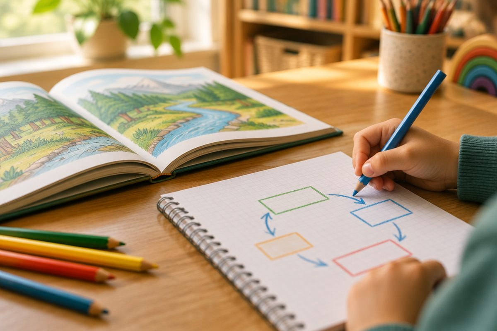

긴 글을 짧게 정리하는 비법은 무엇일까?

설명하는 글을 다 읽었는데 친구가 "무슨 내용이야?" 하고 물으면 말문이 막힐 때가 있지요. 글이 어떤 짜임(구조)으로 쓰였는지 알면 긴 글도 몇 문장으로 쏙쏙 정리할 수 있어요.
글의 구조란 무엇일까요?
글의 구조는 글쓴이가 내용을 어떤 순서와 방법으로 짜 놓았는지를 말해요. 집에 뼈대가 있듯이 글에도 뼈대가 있어요.
설명하는 글에서 자주 쓰는 구조에는 '나열', '순서(시간)', '비교와 대조', '원인과 결과', '문제와 해결'이 있어요.
글의 구조를 알면 중요한 내용이 어디에 있는지 쉽게 찾을 수 있어서 요약하기가 훨씬 편해져요.
구조마다 자주 나오는 말이 있어요
나열 구조는 여러 가지 내용을 하나씩 늘어놓아요. '첫째, 둘째', '또한', '그리고' 같은 말이 자주 나와요.
순서 구조는 시간이나 과정의 차례대로 써요. '먼저', '다음으로', '마지막으로', '처음에는' 같은 말이 나와요.
비교와 대조 구조는 두 대상의 같은 점(비교)과 다른 점(대조)을 써요. '둘 다', '마찬가지로', '이와 달리', '반면에' 같은 말이 나와요.
원인과 결과 구조는 어떤 일이 일어난 까닭과 그 결과를 써요. '왜냐하면', '그래서', '그 결과', '때문에' 같은 말이 나와요. 문제와 해결 구조는 문제 상황을 밝히고 해결 방법을 제시해요.
비교와 대조의 예: 고양이와 개는 둘 다 사람과 함께 사는 반려동물이다. 반면에 고양이는 혼자 있는 시간을 즐기고, 개는 주인과 함께 움직이기를 좋아한다.
구조에 알맞은 틀로 정리해요
글의 구조를 파악했으면 그 구조에 어울리는 틀(그림 틀)에 내용을 옮겨 적어 보세요.
비교와 대조는 두 원이 겹친 벤 다이어그램이나 두 칸 표, 순서는 화살표로 이어진 칸, 원인과 결과는 '원인 → 결과' 화살표 틀이 알맞아요.
틀에 정리하면 중요한 내용과 덜 중요한 내용이 한눈에 구분돼요.
〈글〉 갯벌에는 많은 생물이 산다. 그런데 갯벌을 메워 땅을 만드는 일이 늘어났다. 그 결과 갯벌에 사는 게와 조개가 살 곳을 잃었고, 이들을 먹고 사는 철새도 줄어들었다. 〈틀〉 원인: 갯벌을 메워 땅을 만듦 → 결과: 게·조개가 살 곳을 잃음 → 철새도 줄어듦
요약하는 방법: 지우고, 묶고, 고르기
요약은 글의 중요한 내용을 간추려 짧게 정리하는 것이에요. 요약할 때는 다음 방법을 써요.
① 중요하지 않은 내용(자세한 예, 되풀이되는 말)은 지워요. ② 비슷한 내용은 더 큰 말로 묶어요. 예를 들어 '사과, 배, 감'은 '과일'로 묶을 수 있어요. ③ 문단마다 중심 문장을 골라요. 중심 문장이 없으면 중심 내용을 직접 만들어요.
마지막으로 글의 구조가 드러나도록 문단의 중심 내용을 이어서 한두 문장으로 써요.
〈원래 문장〉 운동장에는 축구공, 농구공, 배구공, 줄넘기가 흩어져 있었다. 〈묶어서 요약〉 운동장에 운동 기구가 흩어져 있었다.
직접 요약해 봐요
아래 글은 순서 구조로 쓰였어요. '먼저, 다음으로, 마지막으로'를 찾아 과정을 정리한 다음 요약해 보세요.
요약문에는 글쓴이의 생각을 바꾸거나 내 생각을 덧붙이지 않아요. 원래 글의 뜻을 그대로 짧게 나타내야 해요.
〈글〉 종이를 다시 쓸 수 있게 만드는 과정은 다음과 같다. 먼저 모은 헌 종이를 물에 불려 죽처럼 만든다. 다음으로 종이 죽에서 잉크와 이물질을 걸러 낸다. 그다음 깨끗해진 종이 죽을 얇게 펴서 눌러 물기를 뺀다. 마지막으로 뜨거운 열로 말리면 새 종이가 된다. 〈요약〉 헌 종이는 물에 불려 종이 죽으로 만들고, 잉크와 이물질을 걸러 낸 뒤, 얇게 펴서 물기를 빼고 말리면 새 종이가 된다.
핵심 낱말
- 글의 구조
- 글쓴이가 내용을 짜 놓은 방법이나 뼈대
- 나열
- 여러 가지 내용을 하나씩 늘어놓는 구조
- 비교와 대조
- 두 대상의 같은 점(비교)과 다른 점(대조)을 밝히는 구조
- 원인과 결과
- 어떤 일이 일어난 까닭과 그로 인해 생긴 일을 밝히는 구조
- 요약
- 글의 중요한 내용을 간추려 짧게 정리하는 것
- 중심 문장
- 한 문단에서 가장 중요한 내용을 담은 문장
한 줄 정리
- 설명하는 글의 구조에는 나열, 순서, 비교와 대조, 원인과 결과, 문제와 해결이 있어요.
- 구조를 알려 주는 말을 찾고, 구조에 알맞은 틀에 내용을 정리해요.
- 요약은 중요하지 않은 내용은 지우고, 비슷한 것은 묶고, 중심 내용을 골라 짧게 쓰는 것이에요.